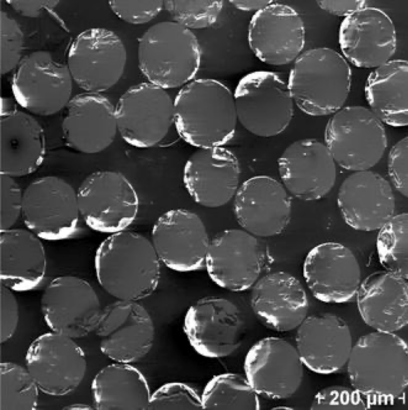

For projects with no linked papers, further details could be made available upon request.
High-d sampling and visualization in scientific computing: A library of high-dimensional test functions for optimization, uncertainty quantification, and numerical integration problems.
Model evaluation and uncertainty quantification for AI/ML: quantifying uncertainty in AI/ML predictive estimates, decomposing it into aleatoric and epistemic components, and consequently guiding active learning.
Vision: Quantifying uncertainty in object detection, segmentation, and image generation-captioning workflows.
Text-to-image generation using Dall-E 3. Prompt: "A nature reserve showing a giraffe, elephant, zebra, and lion, faceted style. Colorful background." Object detection using YOLOv3, trained on COCO. class,confidence,bx,by,bw,bh
horse,0.23,0.46,0.54,0.06,0.05
zebra,0.96,0.31,0.88,0.13,0.15
zebra,0.99,0.75,0.83,0.30,0.20
zebra,0.97,0.11,0.82,0.14,0.11
zebra,0.98,0.07,0.67,0.09,0.06
giraffe,0.97,0.30,0.55,0.28,0.50
Image segmentation using Meta's Segment Anything (SAM) Image captioning using BLIP (via a Huggingface inference API)
Image classification: Accuracy/uncertainty impact of rotation and AWGN addition on NN classifiers, applied to MNIST/CIFAR.
1-d regression: estimating uncertainty bands with deep ensembles, Monte Carlo dropout, and conformal prediction over limited/noisy observations.
Time series classification: predicting class and estimating uncertainty with missing/incomplete time series.
Fourier and signal processing methods in biomedical and bioinfromatics applications: for feature extraction (e.g., period-3 in DNA), object localization (e.g., echos in ultrasound), and spectral analysis of high-d sampling techniques using Nd-FFT.
Persistence spectrum: an interference narrowband signal embedded in a broadband signal ST-DFT spectral analysis for finding the codon bias in DNA [paper]Digital notch filtering to detect wideband ultrasound contrast echos in blood Fourier spectrum analysis of high dimensional sample patterns [paper]
Voronoi Piecewise Surrogate (VPS) models: Leveraging the properties of Voronoi diagrams and Delaunaey graphs in global surrogate modeling problems for high-dimensional uncertainty quantification and adaptive sampling scenarios with a limited sample budget (e.g., multifidelity/costly/high-stakes numerical simulations).
Finding significant Voronoi neighbors in high dimension [paper]A global high-d surrogate stitching local patches in Voronoi cells [paper]Using gradient samples to approximate local active subspaces Adaptive sampling for probability of failure estimation [paper]
Meshing and mesh tuning: creating (or tuning) 2d/3d meshes with guaranteed quality properties.
VoroCrust: unclipped Voronoi mesh conforming to a high-quality surface mesh [paper]
Robust All-Quad Meshing of Domains with Connected Regions, with angle and edge length guarantees [paper]
From computational methods to scientific computing and engineering applications
Extending mesh tuning methods, e.g., for non-obtuse triangulation [paper], to accurately model fiber reinforced polymers for elastic and failure simulations.

A cross-section of a
fiber micrograph and model at peak load and a simulated tensile responses
of different packings [paper]
Machine Learning for collision detection and motion planning.